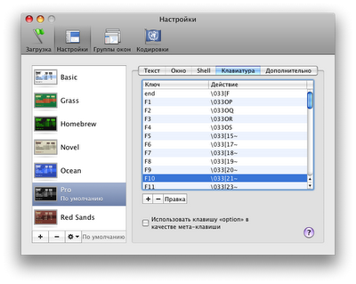
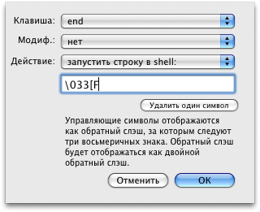

В Terminal.app по умолчанию неправильно работают клавиши Home и End. Почему так сделано в "самой удобной операционной системе всех времен и народов" - совершенно непонятно. Для правильной настройки клавиш необходимо перейти в меню «Терминал → Настройки → вкладка Настройки → Раздел Клавиатура». Появится вот такое окно:

В этом окне нужно найти в списке клавиши «home» и «end», либо создать действия с клавишами «home» и «end». В строку редактирования (там, где настраивается действие) нужно ввести:
home \033[H
end \033[F

Вставка кода \033 осуществляется нажатием клавиши Esc. Данный способ починит поведение этих клавиш в командной строке Terminal.app.
Однако в текстовом редакторе vim эти клавиши по-прежнему будут не работать. Да, вот такой сюрприз. А никто не общал легкой жизни. Для того, чтобы эти клавиши там заработали, добавим следующие строки в файл .vimrc в домашней директории (редакатировать этот файл можно в пока еще не настроенном редакторе vim):
imap <C-v><Home> <Home>
map <C-v><Home> <Home>
imap <C-v><End> <End>
map <C-v><End> <End>
Вместо комбинаций, выделенных жирным шрифтом нужно нажимать реальные сочетания клавиш - Ctrl-V и клавиши Home и End. В итоге должно получиться что-то вроде этого:
imap ^[[H
map ^[[H
imap ^[[F
map ^[[F
Когда все действия будут выполнены, нужно будет перезапустить Terminal.app и всё должно работать нормально. Клавиши Home и End начнут вести себя адекватно и предсказуемо. Да, такая настройка не очеть интуитивно понятна, но что имеем, то имеем. В конце концов, в MacOs в терминале работают только самые упрямые фанаты консоли.
|
Знаете ли вы, что: Ремонт и настройку макбуков лучше всего доверять знающим людям. Отремонтировать ноутбук MacBook в Москве можно быстро и без проблем. Хорошие сервисные центры всегда имеют запас деталей на замену, и не скажут что у них нет оборудования для сложного ремонта. Ремонтируйте свои компьютеры только в проверенных местах. |